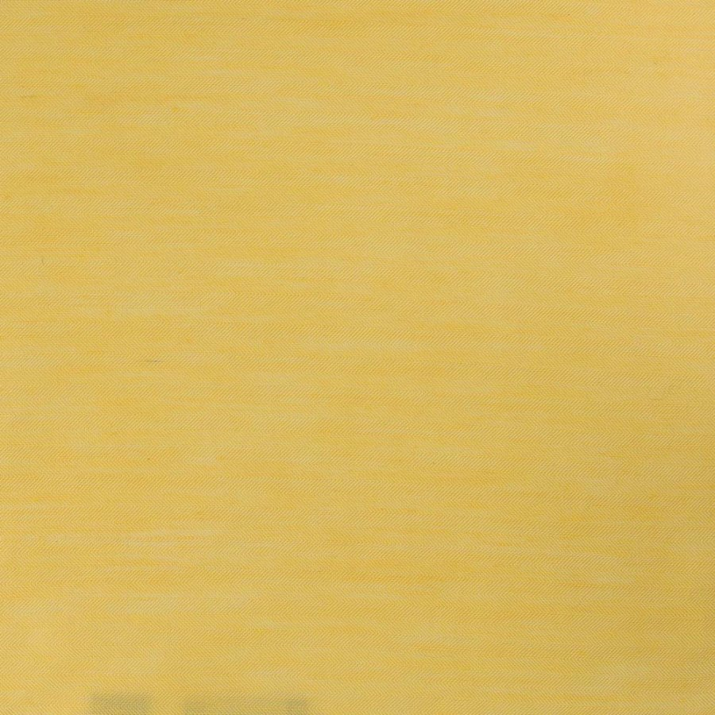

Firefly Games é uma empresa desenvolvedora de jogos independente portuguesa. Esta companhia foi formada no âmbito académico e ficou junta desde então <3.
A Malta fixe que cá trabalha:

Ana Good Vibes Hippie Master
Danielinha Alterna Vida Loka
Gonçalo Nerd Gigante Bonitão
Vicente Criança Prodígio